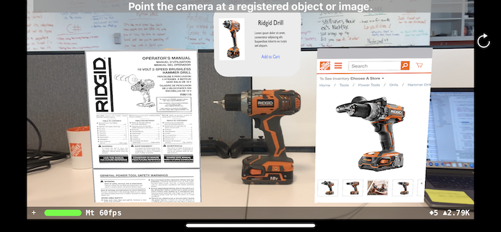
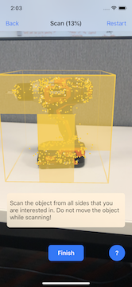
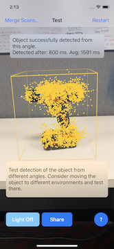
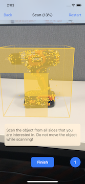
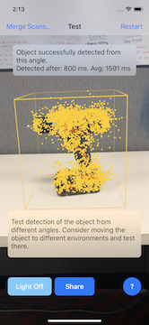

AR Tool Detection
Spring 2019 intern project for The Home Depot Orangeworks Innovation Center. The project goal was to explore the new ARKit 2.0+ framework provided by Apple, especially a new feature called "3D Object Detection" and apply it to tools sold by THD.
- Client:The Home Depot
- Website:Github repo
- Completed:April 26, 2019
Background
If you were looking for a specific product, you would have a hard time searching for that product if you didn't know what it was called. This is especially true in the realm of the products we sell at THD. AR frameworks (particularly ARKit) are getting more powerful and ubiquitous every year. Apple has provided a 3D scanning app that allows users to scan an object anywhere between the size of a ball to a chair. It does this by building the dense point cloud of what the camera sees and then exports it as an "ARObject" extension so developers can use it in XCode. This point cloud could actually be used to represent a specific object. If we can match point clouds to specific objects, we can create an application where you can "scan" an object with your phone and have it tell you what that tool is. Think of this as an extension of image recognition, but in the 3D augmented reality space.
Goal
The goal of this project was to create various point cloud represenations of Home Depot products. One use case was to test
if the same point cloud could be used to represent two units of that object. For example, if you have two powerdrills
of the same model, can you create a point cloud of one of those drills and recognize the other drill with that same point cloud?
Doing so would effectively allow us to scan one object to be able to detect identical ones.
Another use case was if are able to detect objects, can we provide helpful information overlaid in AR space? This could include a
variety of things like product name, description, "Add to Cart" functionality, or even the convenience of loading up an instructional
manual for the tool for the user to reference.
Process
 



Multiple tools around the OrangeWorks office were scanned through Apple's 3D scanning up, and then exported as ARObjects to a XCode project. The scanning process requires the user to define a bounding box around their object in a well lit environment without distractions, scan all sides of the object, and then it generates a point cloud model of that tool. You can then test the object at various angles to see how fast and accurate the detection speed is. The objects I selected to scan into the system were a Ridgid 18v drill, a Esun 3D Filament Box, a Titebond wood glue, two Xbox One controllers and two THD mugs with only one scanned instance of each.
However, I quickly discovered that not all objects were equal. The ARKit documentation notes that reflective or transparent surfaces have a tougher time to detect. Objects that also have minimal detection features or are uniformly one color, such as the Xbox One controllers, are harder to detect as certain orientation as shown above.
Results
Once all objects were scanned in at a rate I determined to be fairely accurate at some angles, I followed ARKit tutorials to learn how to
develop an iOS AR app and overlay content in AR space upon detection of an ARObject on camera. A spitekit pop up scene with the tool picture,
title, description, and a placeholder "Add to Cart" button were overlaid on top. Preliminary results shown above saw that the Titebond wood
glue and Esun 3D Filament box were quickly detected within a second or less. Additionally, multiple objects can be detected in the same frame.
Next, I used the THD mugs to test if one scanned point cloud could detect an identical product. I first placed one mug down and it detected it,
then placed the second mug down on the right and it also detected it while shifting the pop up above the right mug. The THD mugs were a bit
reflective so I could only get it to work at the front-facing angle properly. Nonetheless, it showcased that the same ARObject of one model
can effectively be used to detect identical models!
Finally, for the Ridgid Drill, I wanted to explore if it was possible to overlay web pages such as the online manual or the Home Depot product page for the drill model. With a bit of tweaking 3D coordinates and helpful forum posts, I found it was possible to to overlay them on the sides. You can see the final result above, as well as a playable demo video below:
Summary
Overall the whole project was considered a success thanks to the abundance of resources and tutorials available to learn ARKit 2.0. I was able to
successfully scan multiple tools around the office and convert them into point cloud models. I created an iOS prototype app that could detect those
models on camera at a fast detection rate and overlay information in AR space. The same ARObject model of one object can also be used to detect
another identical object. This project was formally demo'ed at the OrangeWorks end of semester presentations to fellow interns, staff software
engineers, and visiting engineering managers and various full-time workers from The Home Depot Corporate.
Some changes I were to make if I looked back on this project would have been to try implementing buttons in screen space to allow the user to
click on a link that would pull up on their browser instead of pop ups. While a visually cool effect, trying to scroll on those pop up windows was
very wonky and not a completely satisfying user experience. It gave me ideas relating back to the ideate phase of the project and for future ARkit hacks.
As augmented reality frameworks and smartphones get more powerful with every release, I can see a futre where AR will be a ubiquitous technology that's used
more in our current mobile applications. Imagine having a database of ARObjects that are pre-scaned and having an implementation in the current Home Depot
mobile app that allowed the user to use the camera to detect any THD tool and instantly display helpful info. With ARObjects being a small file size of less
than 2mb, we have the potential to store many point cloud models. This is also an alternative to training models with machine learning that can lead to far more accurate results.
This project could be extended for use in weable mixed reality headsets as well. Imagine a worker needing to build a component from smaller parts. The headset could provide helpful instructions and continuously monitor specific objects needed at
each step of the process.